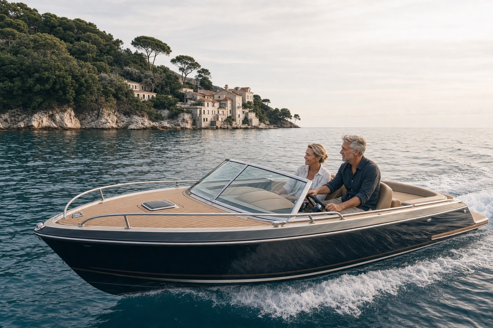

VAŠA MODELÁCIA JE PRIPRAVENÁ
Váš prvý scenár privátnej renty je pripravený.
Modelácia ukazuje jednu možnú cestu k vašej privátnej rente. Je orientačným rámcom – zachytáva hlavné čísla a časový plán, nie však celý kontext vášho majetku, likvidity, rizika a ďalších cieľov.
Odkaz na túto modeláciu sme vám poslali aj e-mailom, aby ste sa k nej mohli kedykoľvek vrátiť.

Váš plán privátnej renty
20
40
60
80
100
TVORBA KAPITÁLU
VÝPLATA PRIVÁTNEJ RENTY
Dnes
Začiatok čerpania
Koniec čerpania
Použité predpoklady
Výpočet pracuje s dlhodobými predpokladmi výnosu a rizika pre jednotlivé investičné profily. Vychádzajú z historických údajov kapitálových trhov a z modelového zastúpenia jednotlivých tried aktív. Ide o orientačné predpoklady, nie o garantovaný budúci výnos.
Východiská modelácie
Ak chcete ísť ďalej
Jedna modelácia ukazuje základný smer, nie všetky podmienky, ktoré môžu počas desiatok rokov nastať. Pri osobnej konzultácii môžeme váš scenár preveriť na 800 výpočtových priebehoch a ukázať, ako by sa správal pri rôznom vývoji kapitálových trhov.
Tento modelový výpočet slúži výhradne na ilustračné a vzdelávacie účely. Nejde o investičné poradenstvo, investičné odporúčanie ani o ponuku či návrh na uzavretie zmluvy. Zhodnotenie nie je garantované, hodnota investície môže v čase kolísať a nie je zaručená návratnosť investovanej sumy.